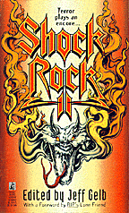

"Drumbeats" is a short story coauthored by Neil Peart & Kevin Anderson.
It's in an anthology entitled "Shock Rock II", edited
by Jeff Gelb, released in January 1994.
Kevin J. Anderson
A Stoker award nominee for his first novel, Anderson credits the music of Rush
as being instrumental to his writing. The Californian has written short
fiction for "The Ultimate Werewolf", "The Ultimate Zombie", and other
publications, as well as the science fiction novel "The Trinity Paradox", and
"Afterimage", cowritten with Kristine Kathryn Rusch.
Neil Peart
Peart, an Ontario resident, is drummer and lyricist for Rush, a
platinum-selling group with fourteen studio albums, several live records, and
numberous worldwide tours to its credit. Peart is a devoted Afrophile whose
bike trips to Cameroon and other exotic locales painted the background for
"Drumbeats."
"The echoing, rich tone of the drum made his fingers warm and tingly, but he allowed himself to be swallowed up in the mystic rhythms, the primal pounding out in the middle of the African wilderness. The other night noises vanished around him, the smoke from the fire rose straight up, and the light centered into a pinpoint of his concentration."
Below is some information behind the collaboration.
[Editor's Note]
Last March/April I began to correspond with Kevin Anderson through mail over his latest project. Kevin will be featured in an upcoming anthology called SHOCK ROCK 2, published by Pocket Books and will be available in February of 1994. The neat thing about this is that Kevin is a big Rush fan and his story called "Drumbeats" was co-authored by none other than Neil Peart!
Here's a little background from Kevin on the story. As you will see, Kevin's written some other Rush-related things as well.
[From Kevin]
I'll give you the full background, which is probably more than you want to hear. I'm a writer, eight novels published, eight more on the way, 150 or so short stories in various magazines and anthologies. Most of my stuff is either science fiction, fantasy, or horror.
My first novel RESURRECTION, INC.(1988) is dedicated in part to RUSH, with the mention that the book was entirely inspired by "Grace Under Pressure." About six months after the book came out, I got a surprise letter from Neil Peart. He loved the book and complimented me most highly on it (it's out of print now, but you might be able to track down a copy of it in a used book store.) We began corresponding regularly. One of my other novels, THE TRINITY PARADOX, was inspired by the song "Manhattan Project." I sent Neil a copy of my novel LIFELINE, then a copy of the just-completed manuscript for THE TRINITY PARADOX (which I was calling TIMELINE, until the publisher made me change it) -- after reading LIFELINE and TIMELINE, Neil went off to write "Dreamline," the first cut off ROLL THE BONES.
Neil has always had aspirations to be a writer himself, and he has written and self-published some fabulous lengthy journals about his various bicycle trips through China, Africa, and the Canadian Rockies. I've read three of them, and remembered them very well.
I got invited to contribute a story to a forthcoming anthology called SHOCK ROCK 2, which will be published next year by Pocket Books, edited by Jeff Gelb. The theme of the anthology is "horror stories about rock & roll." I got the idea for "Drumbeats," about a rock drummer bicycling through Africa between concert tours, and some weird stuff that happens to him. I had the story, but I didn't have the details...neither the details about Africa nor the details about life as a rock star. But Neil did, so I asked if I could lift sections of description from his journals, and get some background from him.
He thought it was a cool idea and gave me permission to do so. I drafted up the story, mailed him a disk, and he gave it a polish and added more details. I did a final polish and sent it off to the editor, who promptly accepted it. It's a genuine collaboration -- I'd say about half the words in the story are Neil's, half mine, and the tale really works, I think. Neil likes it.
[Editor's Note]
Some of you are probably wondering the same thing I did! With 150! short stories I asked Kevin "are most of them related to Rush themes or do you write among other themes?"
[From Kevin]
Yes, I write among other themes -- primarily, in fact. But I have been substantially inspired by RUSH, and often the music trickles in. Another RUSH-inspired story (though you won't really notice), was published in the January issue of ANALOG magazine, which you should be able to find in a decent library. The story is called "Music Played on the Strings of Time." I sent the manuscript to Neil right after I wrote it, and he really liked it.
My full list of novels is:
The ones with asterisks have at least a little RUSH influence in them.
I'm also writing three sequel novels to STAR WARS for Bantam and Lucasfilm, which will be published early next year.
[Editor's Note]
Well's that's the story. I don't know about all you readers but I'll be interested in checking out "Drumbeats" when it becomes available.